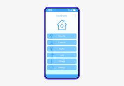
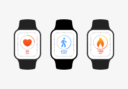
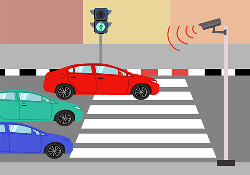

개념 학습
사물 인터넷 기술의 영향
사물 인터넷 기술은 사회 전반의 생산성과 효율성을 높여 새로운 부가가치를 창출할 수 있지만, 개인 정보 유출이나 사생활 침해 등의 부정적인 영향도 있다. 따라서 기술이 인간 관계와 사회적 상호 작용을 보완하는 방향으로 나아가야 할 것이다.
-

생활의 편리성 향상스마트 홈 시스템으로 일상생활이 편리해짐.
-
산업 생산성 증가스마트 공장(자동화된 공장)으로 작업 효율성을 높여 생산성을 증가시킴.
-

건강 관리 개선스마트워치, 헬스케어 기기를 통해 실시간으로 건강 상태를 모니터링할 수 있음.
-

교통 효율성 개선스마트 교통 시스템이 실시간 교통 정보를 제공하여 목적지까지 도착하는 데 소요되는 시간을 단축함.
-
개인 정보 보호 문제사물 인터넷 기기는 사용자의 데이터를 수집하고 저장하기 때문에 개인 정보 보호 문제가 발생할 수 있음.
-
사이버 공격 위험사이버 공격을 통해 스마트 홈, 스마트 공장, 스마트 교통 시스템 등에서 피해가 발생할 수 있음.
-
보안 취약성사물 인터넷 기기는 인터넷에 연결되어 있어 보안에 취약하여 해킹 등에 의해 사이버 공격을 당할 수 있음.
-
일자리 감소자동화 기술이 발전함에 따라 일부 일자리가 감소할 수 있음.